대시보드가 걸어온 길
발표는 고백으로 시작해요. 발표자는 6개월 동안 Datadog을 매일 썼어요. 그런데 동료가 알림 하나를 같이 보자고 해서 대시보드를 열었더니, 어디에 뭐가 있는지 하나도 몰랐대요. 대시보드를 직접 열어 본 적이 한 번도 없었거든요. 매일 쓰긴 했지만 늘 에이전트를 거쳐서 썼던 거예요.
아래가 그때 연 화면이에요. 위쪽에 빨강·초록 막대 그래프가 줄지어 있고, 아래에 작업 요약 표가 붙은 전형적인 모니터링 대시보드예요. 매일 쓰는 도구인데도 이 화면이 낯설었다는 게 발표 전체의 출발점이에요.
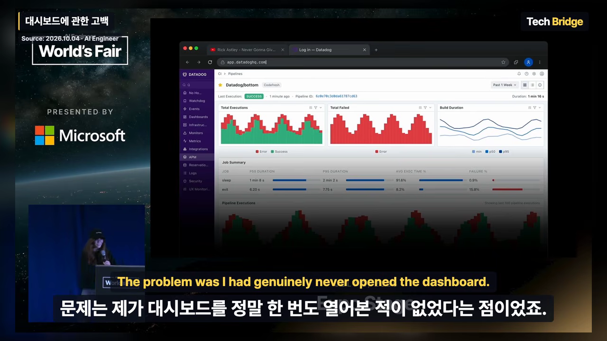
발표자 팀은 Composio의 대시보드를 맡고 있어요. 그래서 이 소식이 객석 모두에게 반갑겠지만 자기한테만은 아니라고 농담해요. 그러고는 대시보드가 어떻게 여기까지 왔는지 해마다 짚어 봐요.
2022년: 도구 다섯 개, 쿼리 언어 다섯 개
슬랙으로 "prod를 검색하면 에러가 나요"라는 메시지가 와요. 화면 가운데 뜬 알림이 바로 그 메시지예요. 2022년의 발표자라면 여기서 창을 다섯 개 띄웠을 거래요. 슬랙에서 맥락을 읽고, Datadog에서 쿼리를 쓰고, PostHog에서 그 세션을 보고, VS Code에서 고치고, GitHub에 PR을 올리는 식이에요.
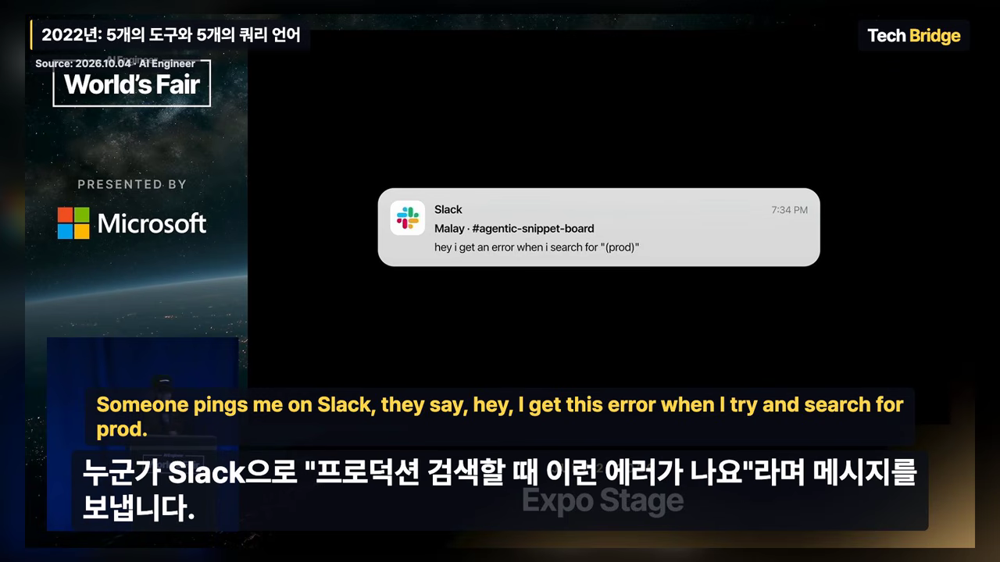
도구 다섯 개면 익힐 UI(User Interface)도 다섯 개예요. 도구가 화면을 개편할 때마다 다시 배워야 해요. 그런데 발표자는 진짜 문제가 따로 있다고 해요. 도구마다 쿼리 언어가 다르다는 점이에요. 아래 슬라이드는 도구 이름 옆에 그 도구의 문법 종류를 붙여 놨어요. grafana는 LogQL, posthog는 HogQL, jira는 JQL(Jira Query Language), slack은 MODIFIERS, linear는 FILTER예요.
더 눈여겨볼 곳은 SQL(Structured Query Language) 꼬리표가 붙은 neon, databricks, snowflake, clickhouse 네 줄이에요. 같은 SQL이라는데 한쪽은 MERGE INTO를, 다른 쪽은 QUALIFY ROW_NUMBER()를 써요. 발표자 말대로 같은 언어를 쓴다는 도구끼리도 SQL에 합의하지 못한 거예요.
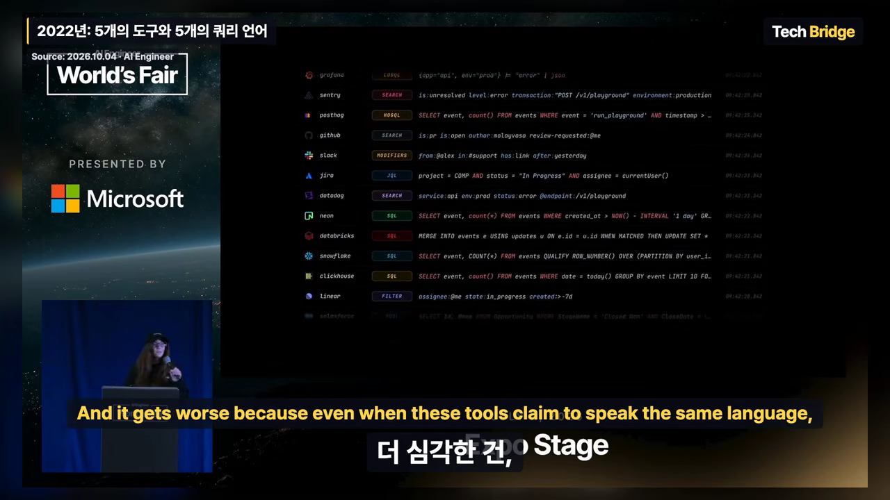
그래서 발표자는 지금까지의 대시보드와 쿼리 언어를 '통역기'라고 불러요. 기계가 사람의 말을 못 알아들으니 사람이 기계의 말을 배워야 했다는 거예요. 아래 슬라이드가 그걸 한 줄로 보여 줘요. 왼쪽 파란 말풍선의 질문 'Q4 매출을 고객별로 보여 줘'에서 시작해 가운데 대시보드를 거쳐 오른쪽 표에 닿아요. 사람이 원한 건 오른쪽 표, 고객별 매출이라는 답이에요.
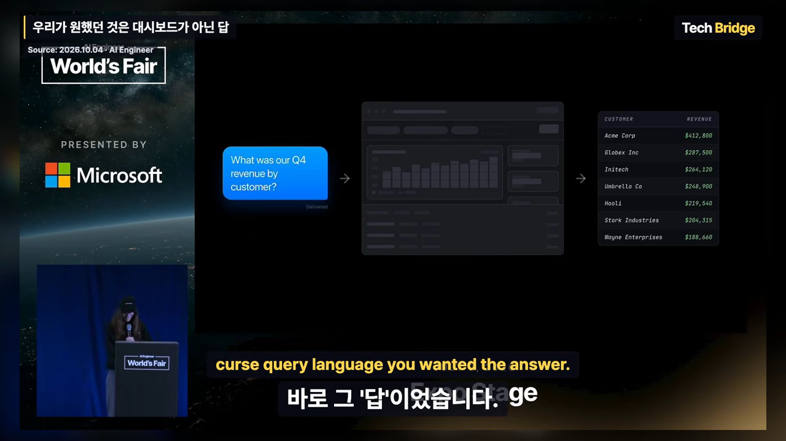
2023년: 반짝이 버튼
2023년에는 앱마다 'Generate' 같은 반짝이 버튼이 붙었어요. 누르면 LLM(Large Language Model)이 쿼리를 대신 써 줘요. 다만 발표자는 그 쿼리가 '가끔' 맞았다고 꼬집어요. 아래 화면에서 빨간 점이 찍힌 1, 5, 6번 줄이 틀린 곳이에요. 특히 6번 줄은 결제 테이블을 pm.order_id = o.user_id로 엉뚱하게 이어요. 조인이 여러 번 필요한 질문에서 이렇게 무너진다는 거예요.
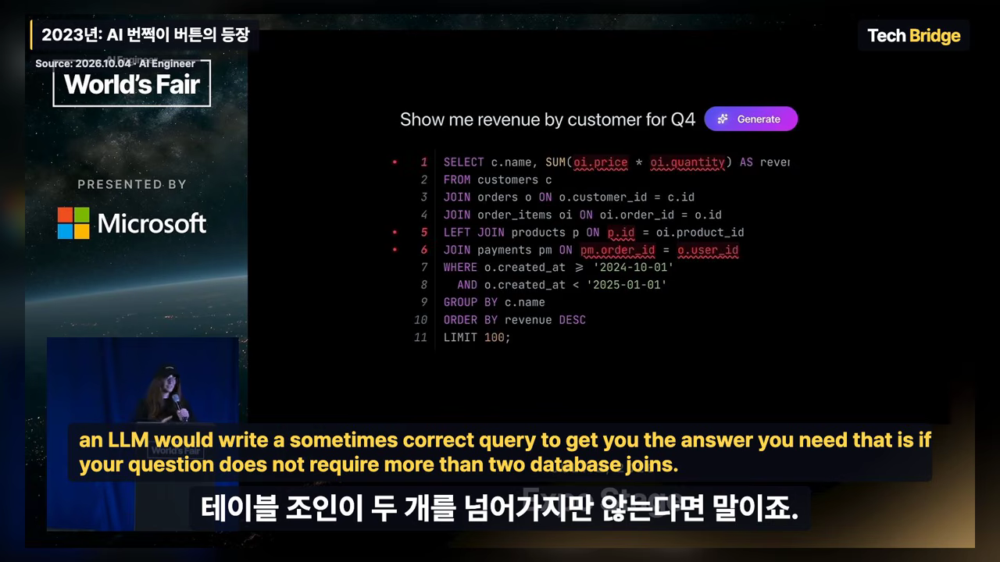
2024년: MCP
2024년 11월 Anthropic이 MCP를 발표했어요. 화면이 그 발표 페이지예요. 이제는 앱마다 붙은 버튼 대신, 매일 쓰는 내 에이전트 Claude가 쿼리를 만들고 대신 실행해서 답까지 가져와요. 발표자는 MCP가 AI 시스템과 데이터를 잇는 열린 표준을 만들겠다는 약속을 실제로 지켰다고 평가해요.
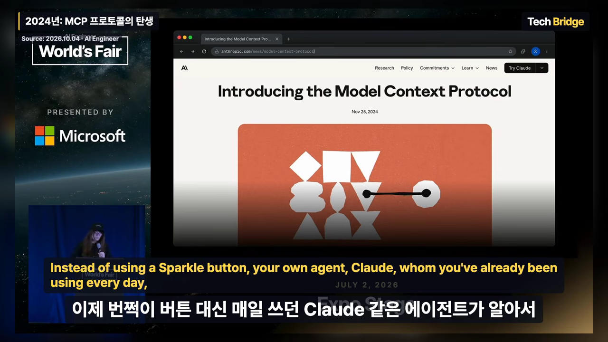
여기까지를 한 장으로 모으면 아래와 같아요. 해가 바뀔 때마다 '쿼리를 누가 쓰느냐'가 바뀌었어요. 마지막 칸은 발표자가 데모로 보여 주는 2026년의 모습이에요.
MCP만으로 부족한 세 가지 이유
MCP로 문제가 다 풀렸을까요? 발표자는 아니라고 해요. MCP는 프로토콜이에요. 에이전트와 서비스가 이야기하는 통로일 뿐이고, 그 통로로 무엇을 어떻게 내줄지는 서비스가 정해요. 발표자는 바로 이 선택이 결과를 가른다고 봐요. MCP 서버를 십여 개 붙여 본 사람이라면 현실이 엉망이라는 걸 안다며 이유 세 가지를 꼽아요.
1. 에이전트는 배우지 않아요
대화는 매번 백지에서 시작해요. 아래 슬라이드의 두 창은 Yesterday와 Today 라벨만 다르고 내용이 똑같아요. 두 창 모두 '#eng-launches에 변경 내역을 올려 줘'라는 요청에 slack.send_message를 부르고, SlackAPIError: invalid_blocks (400)로 실패해요. 슬랙은 링크를 <url|text> 형식으로 받는데 그냥 URL(Uniform Resource Locator)을 넣었기 때문이에요. 사람이 알려 줘야 그제야 고쳐요.
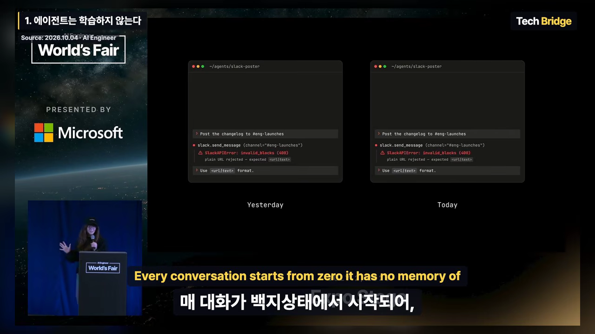
이 빈틈을 흔히 스킬로 메워요. 하지만 발표자는 스킬도 임시방편이라고 해요. 이유는 두 번째 문제와 이어져요.
2. 도구가 너무 많으면 모델이 빠져 죽어요
에이전트는 컨텍스트를 많이 넣을수록 둔해져요. 그런데 도구와 스킬을 더 붙일수록 컨텍스트를 더 먹어요. 서버를 여럿 연결하면 도구 정의 수천 개가 컨텍스트 윈도우에 그대로 쏟아져요. 발표자는 Composio의 GitHub 툴킷 하나에만 도구가 200개 넘게 들어 있다고 예를 들어요.
아래 슬라이드 가운데 표가 그 상황이에요. 둘레에 슬랙, GitHub, Notion, Datadog 같은 앱 열 개가 연결돼 있어요. 컨텍스트 윈도우 1.0M 중 784.6k(78%)가 찼고, 그중 맨 윗줄 MCP tools가 690.6k로 69.1%를 차지해요. 실제 대화 내용인 Messages는 62.0k(6.2%)에 그쳐요.
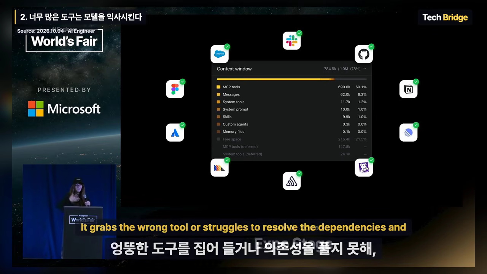
이렇게 되면 모델은 엉뚱한 도구를 집거나, 도구 사이의 순서를 풀지 못해요. 무엇을 먼저 불러야 하는지 모르는 거예요.
3. 앱끼리 서로를 몰라요
MCP 서버 하나는 자기 앱만 알아요. 그런데 실제 일은 거의 늘 두 앱 이상에 걸쳐요. 슬랙에서 받은 신고를 Datadog 로그와 맞춰 보는 식이에요. 그 연결은 결국 사람 몫으로 남아요.
발표자는 세 가지를 한 문장으로 묶어요.
MCP gave agents a door into every app, but it left them standing in thousands of separate rooms with no map and no memory of ever being there.
MCP는 에이전트에게 모든 앱으로 들어가는 문을 열어 줬지만, 지도도 없고 와 본 기억도 없는 수천 개의 방에 따로따로 세워 뒀어요.
— 영상 04:32
세 문제를 표로 다시 모아 볼게요. 오른쪽 칸은 발표자가 다음 데모에서 보여 주는 Composio의 답이에요.
| 문제 | 어떻게 드러나나요 | 데모에서 보여 준 대응 |
|---|---|---|
| 배우지 않아요 | 어제 한 실수를 오늘 또 해요 | 도구와 함께 쓰는 순서까지 돌려줘요 |
| 도구가 너무 많아요 | 도구 정의가 컨텍스트를 채워 엉뚱한 도구를 골라요 | 할 일을 말하면 필요한 도구만 찾아 줘요 |
| 앱끼리 몰라요 | 두 앱에 걸친 일은 사람이 이어야 해요 | 한 번의 검색으로 여러 앱의 도구를 함께 받아요 |
데모: 슬랙 버그 신고에서 수정 PR까지
이제 발표자는 앞에서 본 슬랙 버그 신고를 2026년이라면 어떻게 풀지 보여 줘요. 발표자가 직접 '목업 데모'라고 밝힌 장면이에요. Claude에는 Composio MCP 하나만 연결돼 있어요.
아래 화면 아래쪽 입력창에 들어간 요청이 전부예요. 슬랙 메시지 링크를 붙이고, Sentry와 Datadog으로 에러 메시지를 찾아 원인을 밝힌 뒤 수정 사항으로 드래프트 PR을 만들어 달라고 해요. 괄호 안에는 Datadog 서비스 이름(agentic-snippet-board)과 Sentry 조직·프로젝트 이름만 적었어요. 창 제목의 브랜치 이름은 fix/snippet-search-regex-escape예요.
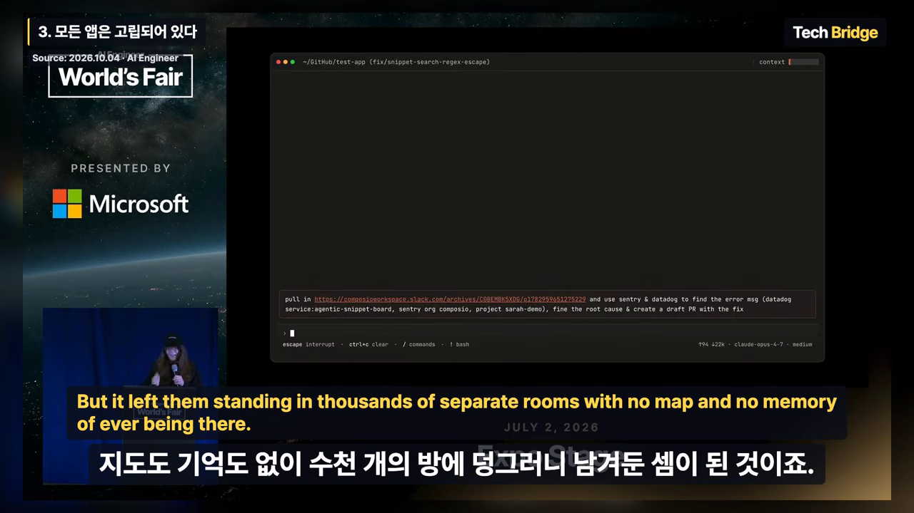
이 뒤로 데모 화면은 영상에 나오지 않고, 카메라는 발표자를 비춰요. 발표자가 말로 설명한 흐름을 순서대로 그리면 아래와 같아요.
sequenceDiagram participant U as 발표자 participant C as Claude participant P as Composio 검색 participant A as 슬랙 · Sentry · Datadog U->>C: 슬랙 링크 + 원인 찾아 드래프트 PR C->>P: 할 일 세 가지를 말해요 P-->>C: 일마다 도구 + 쓰는 순서 C->>A: 슬랙 메시지 읽기 (채널 ID부터) C->>A: Sentry · Datadog 동시 조회 C->>C: 코드베이스 훑고 원인 찾기 C-->>U: 5분 안에 수정 PR
Claude가 Composio 검색에 밝힌 할 일은 세 가지예요. 슬랙 메시지 가져오기, Sentry 이슈 검색, Datadog 로그 검색이에요. Composio는 일마다 알맞은 도구만 돌려주지 않아요. 그 도구를 어떤 순서로 쓰는지도 알려 줘요. 발표자가 든 예가 슬랙이에요. 메시지를 조회하려면 먼저 채널 ID(Identifier)부터 찾아야 해요. 앞 장에서 본 '에이전트는 배우지 않는다' 문제를, 에이전트 대신 도구 쪽이 기억하는 방식으로 푼 셈이에요.
계획이 서면 Claude는 슬랙에서 사용자 불만을 읽어요. 그다음 Datadog과 Sentry를 동시에 조회하고 코드베이스를 훑어요. 원인을 찾자 5분이 안 돼 수정 PR이 올라왔어요. 발표자는 워크플로를 짜거나 스킬을 따로 쓰지 않았다는 점을 강조해요. 그냥 Claude가 Composio MCP를 썼을 뿐이라는 거예요.
이렇게 일하다 보니 발표자에게는 무슨 일이든 Claude부터 여는 게 습관이 됐대요. 반대로 매일 열던 대시보드는 점점 낯설어졌고요. 첫 장의 고백이 여기서 이유를 얻어요.
네이티브 MCP와 비교하면요
발표자는 Claude 마켓플레이스에 올라 있는 앱별 네이티브 MCP와 Composio를 비교한 결과도 언급해요. 같은 작업, 같은 모델로 돌렸고 차이가 뚜렷했다고 해요. 다만 아직 공개 전인 초기 결과라고 했고, 영상에서는 그래프나 숫자를 보여 주지 않아요. 차이가 얼마나 되는지는 이 영상만으로 알 수 없어요.
에이전트용 인터페이스와 두 번째 데모
왜 네이티브 MCP보다 나을까요? 발표자는 Composio가 에이전트만을 위한 새 인터페이스를 만들고 있기 때문이라고 답해요. 우리가 매일 쓰는 앱들의 API(Application Programming Interface)는 지저분하고, 문서도 부실하고, 자꾸 바뀌어요. Composio는 그걸 에이전트가 쓰기 좋은 모양으로 옮겨요. MCP, CLI(Command Line Interface), 네이티브 도구를 모두 바탕으로 삼아 그 위에 한 겹을 얹는다는 설명이에요.
아래 슬라이드는 이 '옮기기'를 왼쪽과 오른쪽으로 나눠 보여 줘요. 왼쪽은 사람을 위한 GitHub REST(Representational State Transfer) 문서의 Pull requests 페이지예요. 엔드포인트 12개, OAuth 인증, 시간당 5,000회 제한 같은 정보가 경로 목록과 함께 나열돼 있어요. 오른쪽 맨 위 COMPOSIO_SEARCH_TOOLS 칸에서는 '기능 브랜치에서 PR을 어떻게 열지?'라고 평소 말로 물어요. 그러면 GITHUB_GET_A_BRANCH → GITHUB_COMPARE_TWO_COMMITS → GITHUB_CREATE_A_PULL_REQUEST 세 단계 계획과 실패하기 쉬운 지점(브랜치가 없거나 PR이 이미 있으면 422 오류)이 돌아와요.
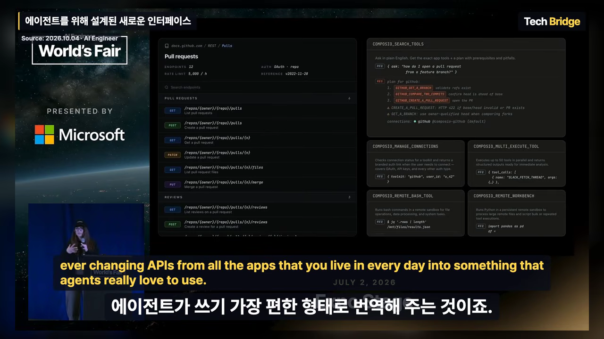
두 번째 데모: PostHog와 Metabase를 넘나들기
이번에는 발표자가 평소에 실제로 쓰는 사례예요. 첫 질문은 간단해요. 사용자가 온보딩에서 고른 업종(버티컬) 분포를 보고 싶다고 해요. Claude는 다시 Composio 검색을 부르고, PostHog에 쿼리를 써서 실행하고, 결과를 보여 줘요.
다음 질문이 진짜 시험이에요. 그중 이커머스를 고른 사용자들이 어떤 툴킷을 즐겨 쓰는지 알고 싶어요. 사용자 ID는 PostHog에 있고, 툴킷 사용 기록은 Metabase에 있어요. 앞에서 말한 '앱끼리 서로를 모르는' 상황이에요. Claude는 이렇게 풀었어요.
- PostHog에서 이커머스 사용자 ID를 조회해요 — 결과 전체를 컨텍스트에 올리지 않고 따로 저장해 둬요.
- Metabase에서 DB(Database) 스키마를 보고 데이터를 조금 뽑아 봐요 — 데이터가 어떻게 생겼는지 감을 잡는 단계예요.
- Composio Remote Workbench에서 SQL을 만들어요 — 저장해 둔 사용자 ID 전체를 정규식으로 찾는 쿼리예요. 이번에도 ID 목록을 컨텍스트에 싣지 않아요.
아래 그림은 이 과정에서 무엇이 모델의 컨텍스트에 들어가고 무엇이 밖에 남는지 나눠 본 거예요. 큰 덩어리인 사용자 ID 목록과 전체 실행 기록은 끝까지 밖에 있어요. 모델은 계획을 세우고 결과를 읽는 데 필요한 것만 봐요.
몇 분 안에 결과가 나왔어요. 화면 맨 위 문장을 보면 지난 7일 동안 이커머스 사용자 459명의 실행 기록 8,682건을 모아 계산했어요. 표에서는 outlook이 28.4%로 가장 많고, composio 14.7%, googledrive와 gmail이 각각 11.6%, instagram 11.3%, googlesheets 10.2% 순이에요. 표 아래 메모에는 shopify가 0.5%밖에 안 된다는 관찰도 붙어 있어요.
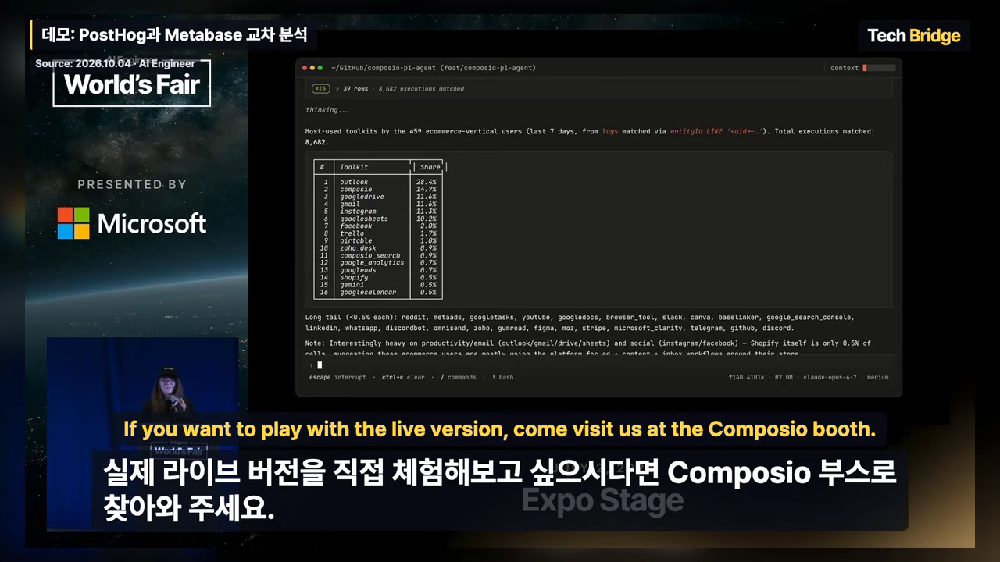
새 사용자는 눈이 없어요
"대시보드는 죽었다"고 다시 한번 말한 뒤, 발표자는 이게 제품을 만드는 사람에게 무슨 뜻인지로 넘어가요. 아래는 이 대목에서 띄운 슬라이드예요. 'AX is the new UX'라는 한 줄과 발표자 Sarah Simionescu, 공동 작업자 Malay Vasa(Composio 디자인 책임)의 이름이 있어요. 사용자 경험(UX(User Experience))을 다듬던 자리에 이제 에이전트 경험(AX(Agent Experience))이 들어선다는 뜻이에요.
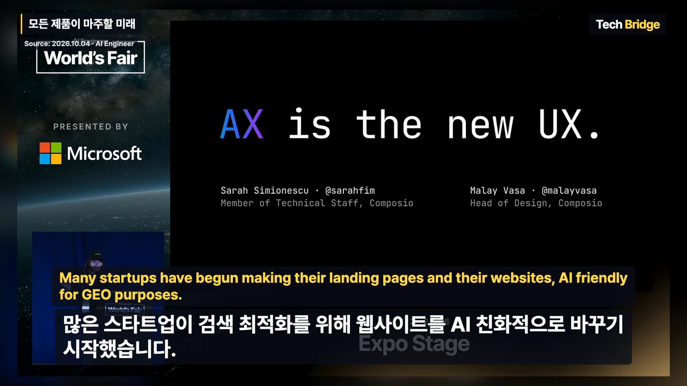
발표자는 많은 스타트업이 GEO(Generative Engine Optimization)를 위해 랜딩 페이지와 웹사이트를 AI 친화적으로 바꾸고 있다고 말해요. 하지만 애플리케이션 자체를 에이전트가 쓰도록 준비한 곳은 아주 적어요. 웹사이트를 AI가 읽기 좋게 만드는 것과, 앱을 에이전트가 쓰기 좋게 만드는 것은 다른 일이라는 거예요.
Composio도 처음에는 개발자를 돕는 도구로 시작했어요. 사람들이 좋아하는 앱을 에이전트가 쓸 수 있는 도구로 바꿔 주는 일이었죠. 그런데 사람은 대시보드에 지쳤고, 에이전트는 엉성한 MCP 서버에 지쳤어요. 이제는 스타트업들이 "우리 고객이 에이전트로 우리 서비스를 쓰게 해 달라고 조른다"며 Composio를 찾아온대요.
그래서 발표자는 지금 무언가를 만드는 모든 사람에게 이렇게 말해요.
You are now serving a new species of user. They don't have eyes. They are not going to click your sparkle button.
여러분은 이제 새로운 종류의 사용자를 상대해요. 그들에게는 눈이 없고, 반짝이 버튼도 누르지 않아요.
— 영상 09:03
이 사용자는 목표 하나와 도구 몇 개를 들고 나타나요. 그리고 딱 하나로 제품을 평가해요. 일을 끝낼 수 있느냐예요. 발표자는 지난 10년이 사람이 쓰기 쉬운 제품의 시대였다면, 다음 시대는 에이전트가 쓰기 쉬운 제품의 것이라고 말해요.
마지막으로 발표자는 처음의 장면으로 돌아가요. Datadog 대시보드 앞에서 얼어붙었을 때는 자기가 뒤처지고 있다고 생각했대요. 지금은 그 순간을 앞으로 올 일의 예고편으로 본다며 발표를 마쳐요.